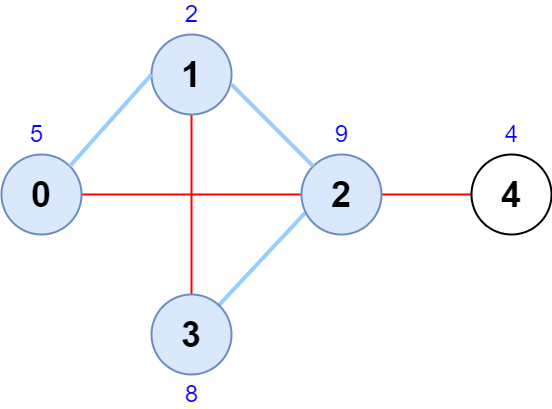
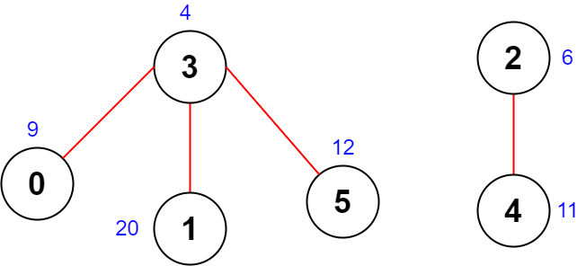

| Category | Difficulty | Likes | Dislikes |
|---|---|---|---|
| Algorithms | Hard | 573 | 21 |
array | graph | sorting | enumeration
google
There is an undirected graph with n nodes, numbered from 0 to n - 1.
You are given a 0-indexed integer array scores of length n where scores[i] denotes the score of node i. You are also given a 2D integer array edges where edges[i] = [ai, bi] denotes that there exists an undirected edge connecting nodes ai and bi.
A node sequence is valid if it meets the following conditions:
The score of a node sequence is defined as the sum of the scores of the nodes in the sequence.
Return the maximum score of a valid node sequence with a length of 4. If no such sequence exists, return -1.
Example 1:

Input: scores = [5,2,9,8,4], edges = [[0,1],[1,2],[2,3],[0,2],[1,3],[2,4]]
Output: 24
Explanation: The figure above shows the graph and the chosen node sequence [0,1,2,3].
The score of the node sequence is 5 + 2 + 9 + 8 = 24.
It can be shown that no other node sequence has a score of more than 24.
Note that the sequences [3,1,2,0] and [1,0,2,3] are also valid and have a score of 24.
The sequence [0,3,2,4] is not valid since no edge connects nodes 0 and 3.Example 2:

Input: scores = [9,20,6,4,11,12], edges = [[0,3],[5,3],[2,4],[1,3]]
Output: -1
Explanation: The figure above shows the graph.
There are no valid node sequences of length 4, so we return -1.
Constraints:
n == scores.length4 <= n <= 5 * 1041 <= scores[i] <= 1080 <= edges.length <= 5 * 104edges[i].length == 20 <= ai, bi <= n - 1ai != bi